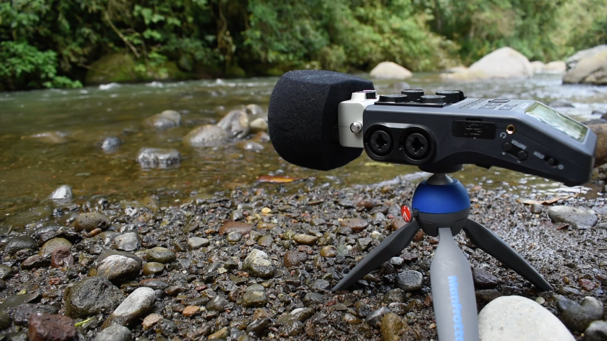

Radio Alternativa & Comunitaria
Claves para pensar la libertad de prensa desde una perspectiva más amplia
Por: Sara Gaviria Piedrahíta

Es importante pensar en la libertad de prensa más allá de los medios hegemónicos o tradicionales, la prensa se ejerce desde muchos lugares y por ello es necesario pensarla desde una perspectiva más amplia y diversa.
Prensa no son solo micrófonos y cámaras
Se hace periodismo desde muchos lugares: grupos de WhatsApp y Telegram, radios
comunitarias, perifoneo,carteles, grafiti, transmisiones de celular y cuentas personales. El periodismo hecho fuera de medios hegemónicos, academias y escuelas de comunicación realiza también un gran trabajo.
Cuestionar las propias fuentes de información
Si toda la información que consumimos proviene de dos únicos canales, de los compañeros de universidad, del propio gremio, es solo producida en la capital del lugar donde se vive o de los seguidores en redes sociales; puede ser una señal de alarma.
Es momento de prestar atención a otras fuentes. Escuchar voces diversas permite hacer un mejor periodismo y tener actitud crítica frente a lo que se consume.
La comunicación comunitaria
La libertad de prensa no está completa sin los medios alternativos, comunitarios y ciudadanos.
Justamente estos son muy vulnerables a ataques, poderes políticos y violencias. Con frecuencia trabajan con precariedad económica y los aportes en forma de tiempo, conocimiento o económicos suman mucho. Compremos sus camisetas, pocillos y boletas.
Ese micrófono que reemplazaste por uno mejor, los audífonos que no usas, memorias USB que nunca abriste, pinturas, el celular que aún funciona bien, un domicilio con refrigerios puede significar mucho para otros espacios.


¿Tienes alguna idea más que sume a este debate?
Tips & Tutoriales
Tip 1
No hagas tomas cortas, graba varios minutos por toma
Tip 2
Escucha con atención y cuidado, disfruta los sonidos que te rodean e inspirate
Tip 3
Inicia con información relevate que te permita archivar y caracterizar
Tip 4
Define el lugar más adecuado para grabar, según el tema a tratar
¿Cómo grabar tus propios sonidos ambiente?
Grabar sonidos ambientales es un ejercicio para explotar la creatividad al crear narraciones sonoras, te permite conectar con los espacios y crear contenidos auténticos.
Sobre los equipos
Elige una grabadora de audio, incluso si es pequeña puede capturar buen sonido. Si no tienes acceso a una, asegúrate conectar un micrófono a tu celular. Una vez tengas tu equipo con baterías y memorias vacías, prepárate para protegerlo del sol o la lluvia. Puedes revisar el pronóstico del clima para hacerte una idea del ambiente que puedes encontrar y los cuidados a tener en cuenta.
Cuidado con ruidos que contaminen el audio
No camines, abras cremalleras o respires muy fuerte mientras grabas. Si estás en compañía, pídele a las otras personas que hagan silencio, puedes explicarles lo que estás haciendo. Usa los audífonos para asegúrate que el sonido quede bien.
Sobre la grabación
No hagas tomas cortas, graba varios minutos por toma. Esto te dará más posibilidades en la edición. Revisa los niveles de audio constantemente. Al iniciar la grabación puedes registrar el lugar, fecha u otros datos importantes para ordenar el archivo.
Lo más importante es que escuches y disfrutes los sonidos que te rodean. Inspírate para crear cosas bellas.